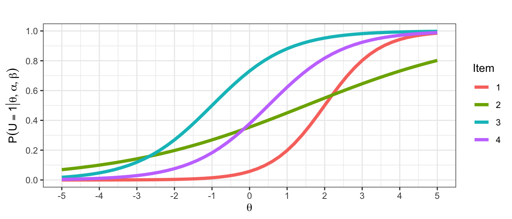
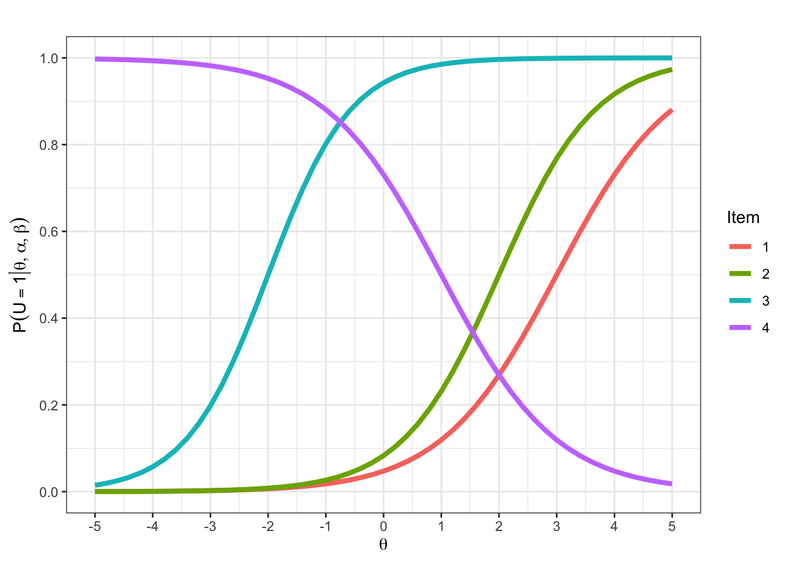
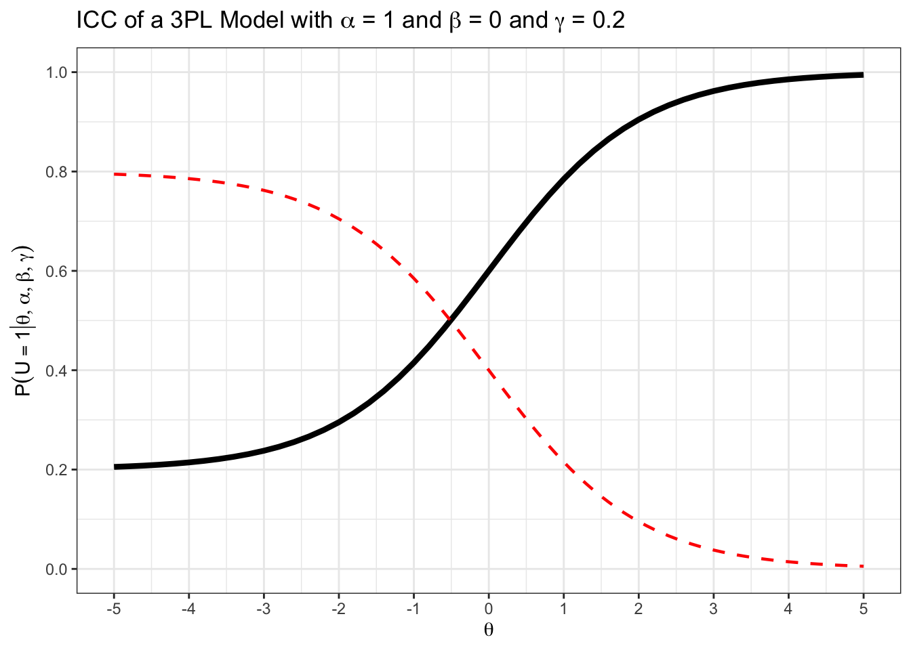

teachIRT::p_2pl(theta = 0.7, alpha = 1, beta = 0.5)[1] 0.549834In der Vorlesung haben Sie das 2PL-Modell kennengelernt. Wie beim Rasch-Modell definiert auch das 2PL-Modell eine Lösungswahrscheinlichkeit, aus der sich die Likelihood-Funktion des Modells ableitet.
Wie unterscheidet sich die Formel der Lösungswahrscheinlichkeit im 2PL-Modell von der Formel der Lösungswahrscheinlichkeit im Rasch-Modell?
Es gibt einen Itemdiskriminationsparameter \(\alpha_i\).
Implizit gibt es den auch schon im Rasch-Modell. Er wird nur nicht frei geschätzt, sondern ist für alle Items gleich \(1\).
Da Sie in der Prüfung mit der Formelsammlung arbeiten müssen, ist es sinnvoll, sich schon beim Bearbeiten der Übungsaufgaben in der Formelsammlung zu orientieren.
Suchen Sie die Formel der Lösungswahrscheinlichkeit im 2PL-Modell in der Formelsammlung.
In der nächsten Aufgabe üben Sie, die Formel für die Lösungswahrscheinlichkeit anzuwenden. Die dritte Aufgabe setzt voraus, dass Sie, wie im Kapitel zu psychometrischen Datenmatrizen gelernt, Werte aus Datenvektoren indizieren können.
Berechnen Sie
Bei der zweiten Aufgabe ist es wichtig, dass es sich um eine Nicht-Lösewahrscheinlichkeit handelt: \(P(\textcolor{red}{U_{ij} = 0} | \theta_i = -2, \beta_j = -1.5, \alpha_j = 1.3)\)
Für die dritten Aufgabe müssen Sie sich an das Kapitel zu psychometrischen Datenmatrizen erinnern. Hier ist die Wahrscheinlichkeit gefragt, dass eine Person \(i\) diejenige Antwort gibt, die wir im Antwortvektor finden. An der dritten Stelle des Antwortvektors steht eine \(1\). Sie müssen also die Lösungswahrscheinlichkeit berechnen.
Die Abbildung zeigt ICCs von vier Items, die mit dem 2PL-Modell skaliert wurden.

Ordnen Sie jeder Kombination von Parametern eine ICC zu.
Item 1 gehört zu c., wobei \(\beta_1 = 2\)
Item 2 gehört zu a., wobei \(\beta_2 = 1.5\)
Item 3 gehört zu d.
Item 4 gehört zu b.
Die ICCs aus der vorherigen Aufgabe wurden mit dem Befehl teachIRT::icc_2pl() erzeugt. Kopieren Sie den folgenden Code Chunk in Ihre eigene R Umgebung und ersetzen Sie die Parameterwerte. Geben Sie Ihrer Lerngruppe nur einen Teil der Parameter vor und lassen Sie Ihre Kommiliton:innen Items zu Parametern zuordnen.
alpha enthält jeweils die Diskriminationsparameter und \(\beta\) enthält jeweils die Schwierigkeitsparameter. Da jedes Item jeweils einen Diskriminations- und Schwierigkeitsparameter haben muss, müssen für die beiden Argumente jeweils gleich viele Werte eingetragen werden.
library(ggplot2)
p <- teachIRT::icc_2pl(
alpha = c(1, 1.2, 1.4, -1),
beta = c(3, 2, -2, 1)
)
p <- p + ggplot2::ggtitle("")
p
Siehe auch ?teachIRT::icc_2pl.
Wenn Sie die vorherigen Aufgabe erledigt haben, ist die nächste für Sie ein alter Hut. Es vor Allem darum, dass Sie sehen, was passiert, wenn man für \(\alpha\) Werte einsetzt, die kleiner als \(0\) sind.
Plotten Sie ICCs eines 2PL-Modells für drei Items mit \(\beta_1 = \beta_2 = \beta_3 = 0\) und
Sie können diesen Befehl verwenden:
teachIRT::icc_2pl(alpha = -1, beta = 0)
Nun wissen Sie, wie eine ICC mit negativer Diskrimination aussieht. Aber was bedeuten negative Diskriminationsparameter? Darum geht es in der nächsten Aufgabe.
Nehmen Sie an, dass die drei Items das latente Konstrukt Extraversion messen. Finden Sie je ein Beispielitem für die Werte \(\alpha_1\), \(\alpha_2\), und \(\alpha_3\).
Hier noch eine Aufgabe, um ein Gefühl für den Diskriminationsparameter zu bekommen.
Starten Sie mit teachIRT::icc_2pl(alpha = 0, beta = 0) und setzen Sie immer größere (/immer kleinere) Werte für \(\alpha\) ein. Erklären Sie inhaltlich, welchen Effekt die Veränderung des \(\alpha\)-Parameters hat.
Sie haben sicherlich festgestellt, dass die ICC mit höheren Werten für \(\alpha\) steiler wird. \(\alpha\) ist allerdings nicht direkt die Steigung der ICC, sondern proportional zu ihr. Da die ICC sigmoid ist, hängt die Steigung vom Wert auf der x-Achse, also \(\theta\), ab. Diese Abhängigkeit der Steigung von \(\theta\) werden wir im Kapitel zum adaptiven Testen bzw. zur Item- und Testinformation noch einmal nutzen.
Vom Rasch-Modell kennen Sie die Konzepte suffizienter Statistiken, spezifischer Objektivität und der lokalen stochastische Unabhängigkeit.
Aufgrund der Annahme lokaler stochastischer Unabhängigkeit kann man im 2PL-Modell, wie im Rasch-Modell auch, Lösungs- und Nichtlösewahrscheinlichkeiten miteinander multiplizieren. Das haben Sie in den Übungen zum Rasch-Modell schon einmal gemacht. Zur Sicherheit üben Sie das in der nächsten Übung noch einmal mit dem 2PL-Modell:
Berechnen Sie die Wahrscheinlichkeit, bei einer Person mit \(\theta = 0.3\) den Antwortvektor \(\mathbf{u}_{i.} = [1, 0, 0]\) zu beobachten. Die Items \(1\), \(2\) und \(3\) haben die Itemparameter \(\alpha_1 = 0.4\), \(\alpha_2 = 1\), \(\alpha_3 = 1.2\), \(\beta_1 = -1\), \(\beta_2 = 1.2\), \(\beta_3 = 0.3\).
Bei Item 2 können Sie Zeit sparen, indem Sie die Formel für das Rasch-Modell verwenden. Bei Item 3 können Sie Zeit sparen, wenn Sie bemerken, dass \(\theta = \beta_3\) ist.
\(P(U_{i1} = 1, U_{i2} = 0, U_{i3} = 0 | \alpha_1 = 0.4, \alpha_2 = 1, \alpha_3 = 1.2, \beta_1 = -1, \beta_2 = 1.2, \beta_3 = 0.3)\)
\(= P(U_{i1} = 1 | \alpha_1 = 0.4, \beta_1 = -1) \cdot P(U_{i2} = 0 | \alpha_2 = 1, \beta_2 = 1.2) \cdot P(U_{i3} = 0 | \alpha_3 = 1.2, \beta_3 = 0.3)\)
\(= \frac{1}{1 + e^{-\alpha_1 (\theta - \beta_1)}} \cdot \frac{1}{1 + e^{\theta - \beta_2}} \cdot \frac{1}{1 + e^{-\alpha_3 (\theta - \beta_3)}}\)
\(= \frac{1}{1 + e^{-0.4 (0.3 + 1)}} \cdot \frac{1}{1 + e^{0.3 - 1.2}} \cdot 0.5\)
\(\approx .22\)
Da Sie nun wissen, dass im 2PL-Modell die lokale stochastische Unabhängigkeit wie im Rasch-Modell gilt, können Sie das Wissen direkt übertragen.
Schreiben Sie formal die Likelihood des Antwortvektors einer Person \(i\) für das 2PL-Modell auf.
Den ersten Teil der Lösung finden Sie 1 zu 1 beim Rasch-Modell.
Wenn Sie noch weiter gehen wollen und einen Wert für die Wahrscheinlichkeit im 2PL-Modell einsetzen möchten, müssen Sie eine Formel für \(P(U_{ij} = u_{ij} | \theta)\) im 2PL-Modell finden. Das müssen Sie ad-hoc nicht selbst hinkriegen. Für den Fall, dass Sie es doch probieren möchten, haben wir diese Formel erst im nächsten Tipp hinterlegt.
\(P(U_j = u_j \mid \theta) = \frac{\exp(u_{ij}\,\alpha_j\,(\theta_i - \beta_j))}{1 + \exp(\alpha_j\,(\theta_i - \beta_j))}\)
Die Logik ist die gleiche, wie im Rasch-Modell. Um die Likelihood eines Antwortvektors zu erhalten, müssen Sie die Wahrscheinlichkeiten der beoabchteten Testantworten miteinander multiplizieren:
\[\begin{equation} P(U_1 = u_1, ..., U_m = u_m | \theta) = \prod_{j = 1}^{m} P(U_j = u_j | \theta) \end{equation}\]
Beim 2PL-Modell müssen Sie lediglich eine andere Warscheinlichkeit für \(P(U_j = u_j | \theta)\) verwenden. Man könnte also auch schreiben:
\[\begin{equation} P(U_1 = u_1, ..., U_m = u_m | \theta) = \prod_{j = 1}^{m} \frac{exp(u_{ij} \alpha_j (\theta_i - \beta_j))}{1 + exp(\alpha_j (\theta_i - \beta_j))} \end{equation}\]
Denn der Ausdruck \(\frac{\exp(u_{ij} \alpha_j (\theta_i - \beta_j))}{1 + \exp(\alpha_j (\theta_i - \beta_j))}\) wird, je nachdem, ob man für \(u_{ij}\) den Wert \(1\) oder \(0\) einsetzt, jeweils zur Lösungs- oder Nichtlösewahrscheinlichkeit. Probieren Sie das gerne einmal selbst aus!
Ein 2PL-Modell wurde auf die Daten des Mathetests im Abschnitt zum Rasch-Modell gefittet. Dazu wurde der Befehl mirt des Pakets mirt verwendet.
Loading required package: stats4Loading required package: lattice
Call:
mirt(data = responses, itemtype = "2PL")
Full-information item factor analysis with 1 factor(s).
Converged within 1e-04 tolerance after 13 EM iterations.
mirt version: 1.45.1
M-step optimizer: BFGS
EM acceleration: Ramsay
Number of rectangular quadrature: 61
Latent density type: Gaussian
Log-likelihood = -4339.257
Estimated parameters: 40
AIC = 8758.513
BIC = 8927.097; SABIC = 8800.135
G2 (1048535) = 3160.83, p = 1
RMSEA = 0, CFI = NaN, TLI = NaNIst das 2PL-Modell konvergiert?
Ja, das erkennen Sie an der Zeile “Converged within 1e-04 tolerance after 13 EM iterations.”
Mit dem Befehl coef() wurden die Parameterschätzer des 2PL-Modells extrahiert.
$items
a b g u
X1 0.918 -2.261 0 1
X2 0.964 -2.637 0 1
X3 0.966 -0.701 0 1
X4 1.106 -0.668 0 1
X5 1.109 -3.085 0 1
X6 1.082 -1.483 0 1
X7 0.795 -2.619 0 1
X8 1.172 -3.319 0 1
X9 1.036 -1.596 0 1
X10 0.797 -1.841 0 1
X11 0.777 -2.072 0 1
X12 0.821 -1.704 0 1
X13 0.745 -0.777 0 1
X14 0.855 -1.339 0 1
X15 0.853 -2.568 0 1
X16 1.310 -1.967 0 1
X17 0.859 -2.069 0 1
X18 1.085 -1.061 0 1
X19 0.853 -2.843 0 1
X20 1.367 -1.468 0 1
$means
F1
0
$cov
F1
F1 1Wofür stehen die Spalten a und b?
a ist der Diskriminationsparameter
b ist die Itemschwierigkeit
Lesen Sie den Diskriminationsparameter des leichtesten Items ab.
Vergleichen Sie die geschätzten Schwierigkeitsparameter des 2PL-Modells mit denen des Rasch-Modells in der person-item map. Was könnte der Grund dafür sein, dass alle Itemschwierigkeiten im 2PL-Modell negativ sind, während sie im Rasch-Modell um \(0\) herum verteilt sind?
In mirt wird zur Identifikation der latenten Skala nicht der Mittelwert der Itemparameter, sondern der Mittelwert der erwarteten Verteilung der Personenparameter auf \(0\) gesetzt.
Im folgenden Code extrahieren wir die Personenparameter und überprüfen, ob ihr Mittelwert tatsächlich \(0\) ist:
Fast! Der Identifikationsconstraint wird nicht auf die geschätzten Personenparameter angewendet, sondern nur auf die latente Verteilung im Modell, sodass die individuellen Schätzungen davon abweichen können. Daher kann der Mittelwert etwas von \(0\) abweichen.
Sie haben in der Vorlesung das 3PL-Modell kennengelernt.
Wie unterscheidet sich die Formel der Lösungswahrscheinlichkeit im 3PL-Modell von der Formel der Lösungswahrscheinlichkeit im 2PL-Modell?
Zusätzlich zum Diskriminationsparameter gibt es einen Rateparameter.
Suchen Sie die Formel der Lösungswahrscheinlichkeit im 3PL-Modell in der Formelsammlung.
\[\begin{equation} P(U_{ij} = 1 | \theta_i, \beta_j, \alpha_j, \gamma_j) = \gamma_j + (1 - \gamma_j) \cdot \frac{e^{(\alpha_j (\theta_i - \beta_j))}}{1 + e^{\alpha_j (\theta_i - \beta_j)}} \end{equation}\]
Berechnen Sie die Wahrscheinlichkeit des Antwortvektors \(\mathbf{u}_{i.} = [1, 1, 0]\) für den folgenden Itempool bei \(\theta = -0.5\):
| j | \(\alpha\) | \(\beta\) | \(\gamma\) |
|---|---|---|---|
| 1 | 1.0 | -0.5 | 0.0 |
| 2 | 0.8 | 1.0 | 0.2 |
| 3 | 1.2 | 0.0 | 0.1 |
Bei Item \(1\) müssen Sie nicht rechnen, da \(\gamma = 0\) und \(\theta = \beta_1\).
\[\begin{equation} P(U_{i1} = 1 | \theta_i = -0.5) = \tfrac{1}{2} \end{equation}\]
Items \(2\) und \(3\) erfordern die vollständige Formel des 3PL-Modells.
\[\begin{equation} P(U_{i2} = 1 | \theta_i = -0.5) \end{equation}\]
\[\begin{equation} = 0.2 + 0.8 \cdot \frac{exp(0.8 (-0.5 - 1))}{1 + exp(0.8 (-0.5 - 1))} \end{equation}\]
Bei Item \(3\) müssen Sie darauf achten, dass das Item nicht gelöst wurde.
\[\begin{equation} P(U_{i3} = 1 | \theta_i = -0.5) \end{equation}\]
\[\begin{equation} = 0.1 + 0.9 \cdot \frac{exp(1.2 (-0.5))}{1 + exp(1.2 (-0.5))} \end{equation}\]
Und es ist \(P(U_{i3} = 0 | \theta_i = -0.5) = 1 - P(U_{i3} = 1 | \theta_i = -0.5)\).
Zur Berechnung der Wahrscheinlichkeit des ganzen Antwortvektors verwenden wir die Annahme lokaler stochastischer Unabhängigkeit:
\[\begin{equation} P(U_{i1} = 1, U_{i2} = 1, U_{i3} = 0 | \theta=-0.5) \end{equation}\]
\[\begin{equation} = \prod_{j = 1}^{3} P(U_{ij} = u_{ij} | \theta_i = -0.5) \end{equation}\]
\[\begin{equation} = \frac{1}{2} \cdot \Big( 0.2 + 0.8 \cdot \frac{exp(0.8 (-0.5 - 1))}{1 + exp(0.8 (-0.5 - 1))} \Big) \cdot \Big(1 - (0.1 + 0.9 \cdot \frac{exp(1.2 (-0.5))}{1 + exp(1.2 (-0.5))}) \Big) \end{equation}\]
\[\begin{equation} \approx .11 \end{equation}\]
Wir überprüfen in R:
# Fähigkeitsparameter im Objekt theta speichern
theta <- -0.5
# Die erste Lösungswahrschienlichkeit folgt aus dem Rasch-Modell bei theta = beta
p1 <- 0.5
# Lösungswahrscheinlichkeit von Item 2 berechnen
p2 <- teachIRT::p_3pl(
theta = theta,
alpha = 0.8,
beta = 1,
gamma = 0.2
)
# Lösungswahrscheinlichkeit von Item 3 berechnen
p3 <- teachIRT::p_3pl(
theta = theta,
alpha = 1.2,
beta = 0,
gamma = 0.1
)
# Gemeinsame Wahrscheinlichkeit des Antwortvektors berechnen
prob <- p1*p2*(1-p3)
print(prob)[1] 0.1119123Im Plot sehen Sie die ICC eines Items im 3PL-Modell mit \(\beta = 0\), \(\alpha = 1\), und \(\gamma = 0.2\). Zeichnen Sie die Nichtlösewahrscheinlichkeit ein.
Wenn Sie wissen, dass sich Wahrscheinlichkeiten \(P(U_{ij} = 1 | \theta_i)\) und \(P(U_{ij} = 0 | \theta_i)\) für jeden Wert von \(\theta_i\) zu \(1\) summieren, können Sie die Nicht-Lösewahrscheinlichkeit am Graphen rekonstruieren.

Welchen Wert erhalten Sie für \(\lim_{\theta_i \to -\infty} P(U_{ij} = 1 | \theta_i, \beta_j, \alpha_j, \gamma_j)\)?
Falls Sie keinen Ansatz finden, können Sie sich den schwierigeren Teil der Lösung vorgeben lassen. Im zweiten Teil der Lösung müssen Sie keine Formeln mehr umstellen, sondern können immer kleiner werdende Werte für \(\theta_i\) einsetzen.
Gesucht ist
\[\begin{equation} \lim_{\theta_i \to -\infty} P(U_{ij} = 1 | \theta_i, \beta_j, \alpha_j, \gamma_j) \end{equation}\]
\[\begin{equation} = \lim_{\theta_i \to -\infty} \gamma_j + (1 - \gamma_j) \cdot \frac{e^{\alpha_j(\theta_i - \beta_j)}}{1 + e^{\alpha_j (\theta_i - \beta_j)}} \end{equation}\]
Der erste Term enthält nur den Parameter \(\gamma_j\). Die Berechnung des Limits beschränkt sich also auf den Bruch im zweiten Term.
\[\begin{equation} = \gamma_j + (1 - \gamma_j) \cdot \lim_{\theta_i \to -\infty} \frac{e^{\alpha_j(\theta_i - \beta_j)}}{1 + e^{\alpha_j (\theta_i - \beta_j)}} \end{equation}\]
Ab hier können Sie sprachlich argumentieren bzw. immer kleinere Werte im Taschenrechner einsetzen.
Wenn \(\theta_i\) extrem klein wird, geht \(\theta - \beta_j\) gegen \(-\infty\). Somit geht der Zähler gegen \(0\) und der Nenner gegen \(1\). Daher gehen der Bruch und folglich auch das Produkt mit \((1-\gamma_j)\) asymptotisch gegen \(0\). Es bleibt der Grenzwert \(\gamma_j\).
Das sieht man auch an den ICCs. Testweise kann man eine sehr weite \(\theta\)-Achse plotten.
Man sieht, dass die untere Asymptote den Wert \(\gamma = 0.2\) im geplotteten Bereich nicht unterschreitet. Zuvor haben wir gezeigt, dass das auch im Unendlichen nicht passiert.
Erklären Sie mit eigenen Worten, was die untere Asymptote der ICC im 3PL-Modell inhaltlich bedeutet.
Egal wie gering die Personenfähigkeit einer Person ist, es bleibt immer eine Wahrscheinlichkeit von \(\gamma_j\), das Item zu lösen.
Recherchieren Sie: Gibt es ein 4PL-Modell? Was könnte der vierte Parameter bedeuten?
Kreuzen Sie in der folgenden Tabelle an, wenn ein Parameter im Modell frei geschätzt wird.
| Modell | \(\alpha\) | \(\beta\) | \(\gamma\) |
|---|---|---|---|
| Rasch | |||
| 2PL | |||
| 3PL |
| Modell | \(\alpha\) | \(\beta\) | \(\gamma\) |
|---|---|---|---|
| Rasch | \(\checkmark\) | ||
| 2PL | \(\checkmark\) | \(\checkmark\) | |
| 3PL | \(\checkmark\) | \(\checkmark\) | \(\checkmark\) |
Welche Werte können der \(\alpha\), \(\beta\), \(\gamma\), und \(\theta\) Parameter im 3PL-Modell minimal und maximal annehmen?
\(\alpha, \beta \in \mathbb{R}\)
\(\gamma \in [0, 1]\)